This is the first in a three part series of posts on; Setting up a personal Certification Authority, Securing Apache with Client Certificates, and Setting up FreeRADIUS to secure your WiFi.
I've been looking for some software to run my own personal Certification Authority. I've used OpenSSL but personally I find it very hard to work with. I feel like there are hundreds of different options, flags and switches. While OpenSSL can be used to run a CA, I need to look up the commands again and again every time I try to use it. I even find GNU Privacy Guard easier to wrangle.
I've used the Windows Certification Authority at work and it's not too bad, a few peculiarities but it dose it's job. But I don't want to run a Windows Server at Home. Some CAs like EJBCA look good but I think are overkill for what I wanted so I settled on TinyCA. The official site for TinyCA times out but I used the Arch Linux version.
On Debian run sudo apt-get install tinyca
When you first open TinyCA you are presented with a welcome screen to create a new Certification Authority.
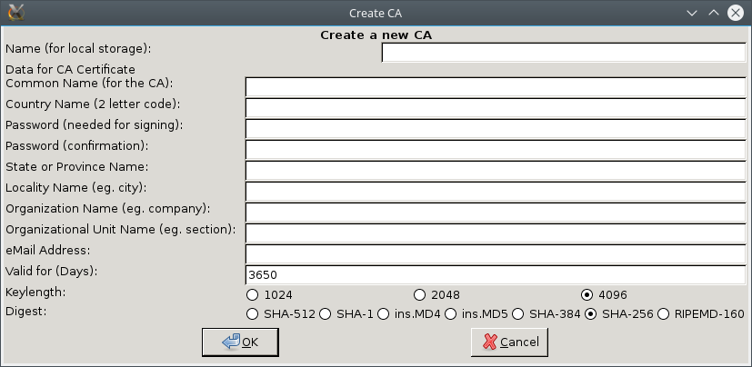
Most of the fields are pretty self explanatory
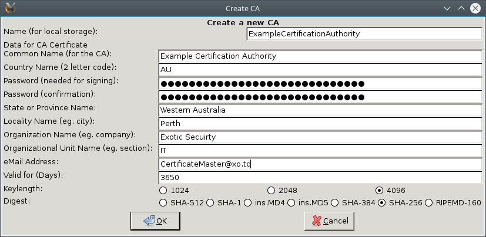
Then you are presented with a configuration screen, I just went with the defaults.

OK
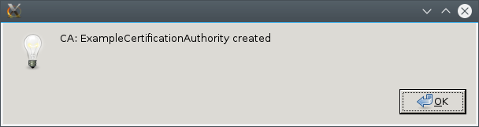
And finaly we get to the main screen of Tiny CA
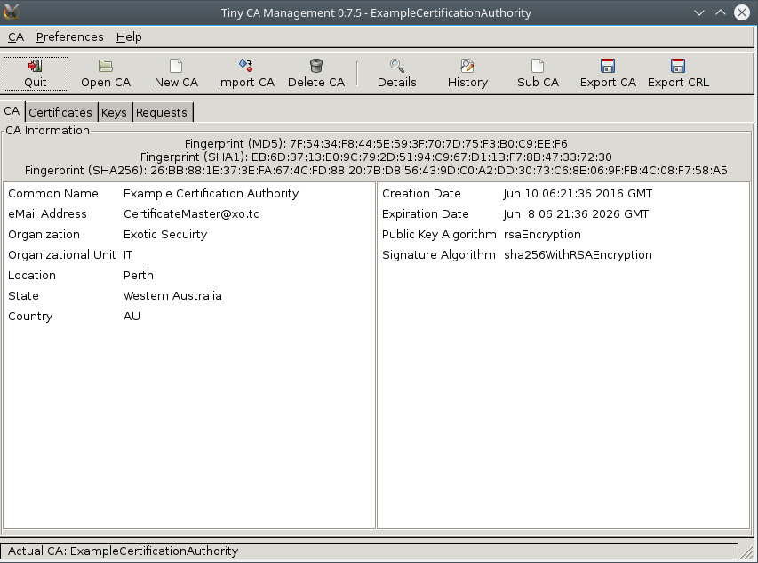
To create a Client Certificate go over to the requests tab, right click and go to new Request
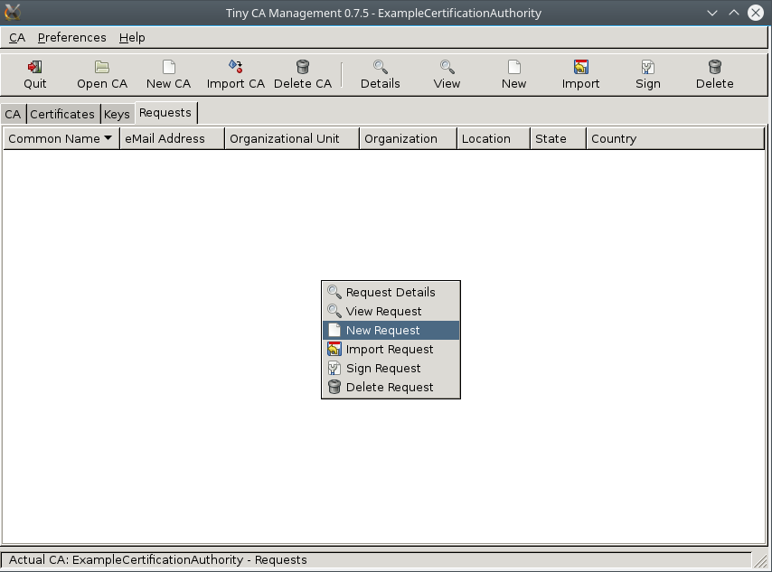
Fill in your details, again fairly self explanatory
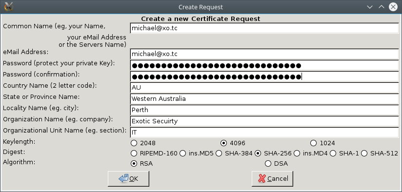
Now right click on the request and go to Sign Request > Sign Request (Client)
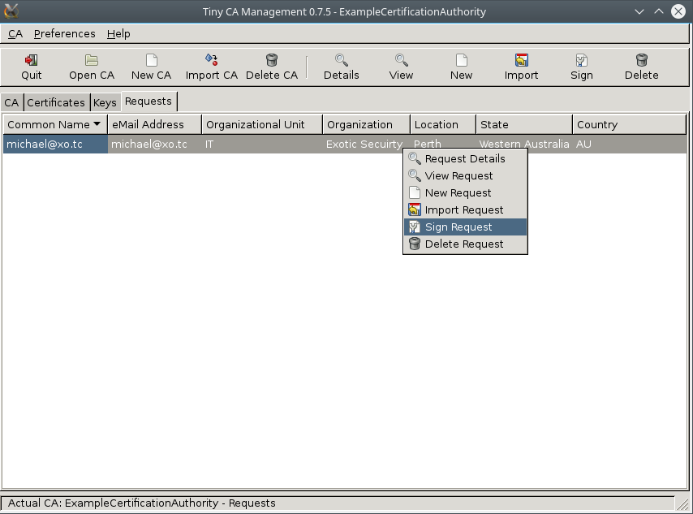
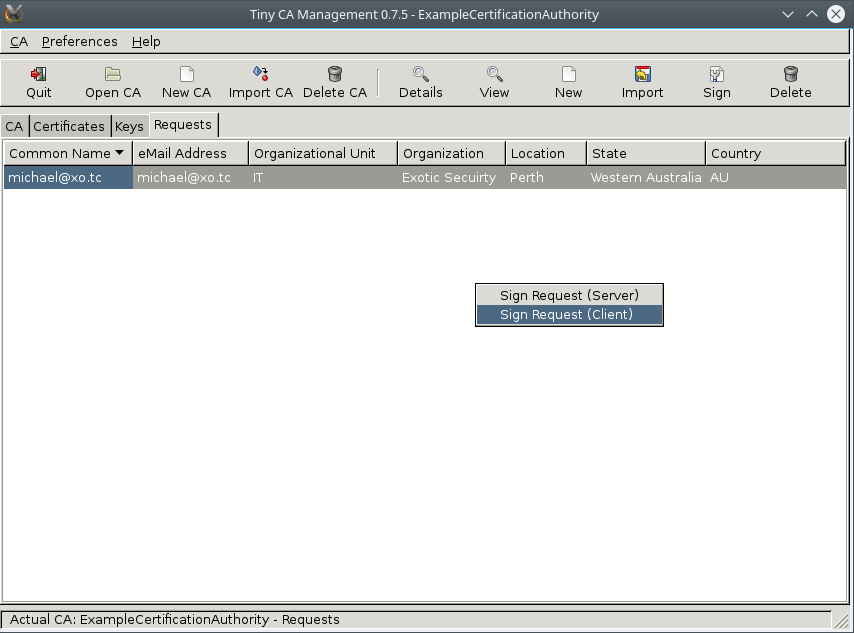
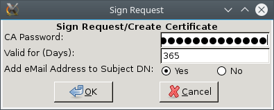
Now under Certificates select the new certificate and export it
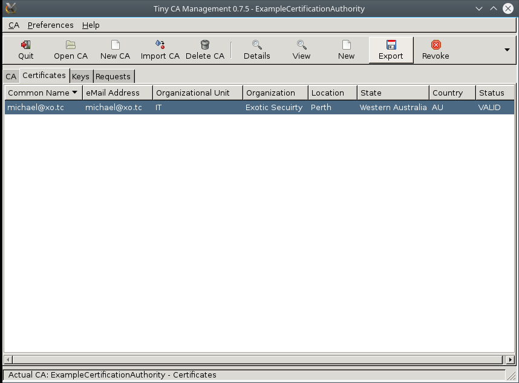
save it as a PKCS12 (.p12) files
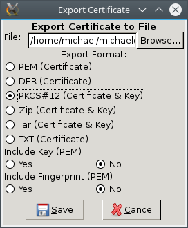
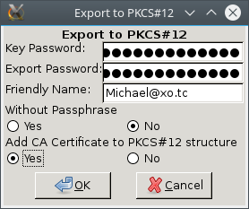
And also export the CA Certificate
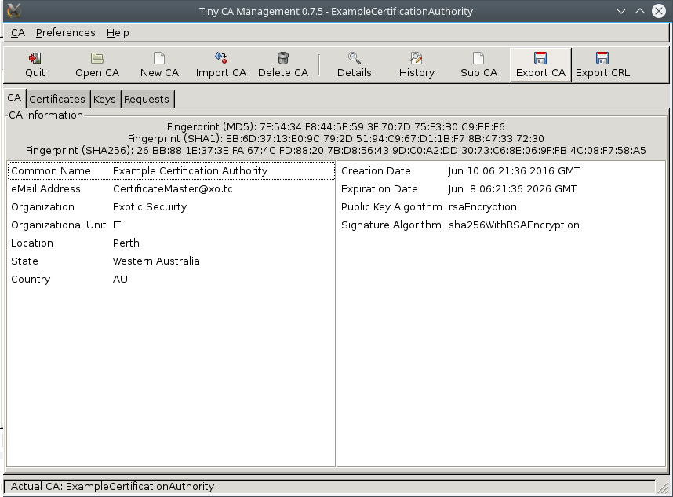
For those looking for the Tiny CA configuration files and keys they will be in ~/.TinyCA/
In the next few posts we will look at what we can do with our new certificates.